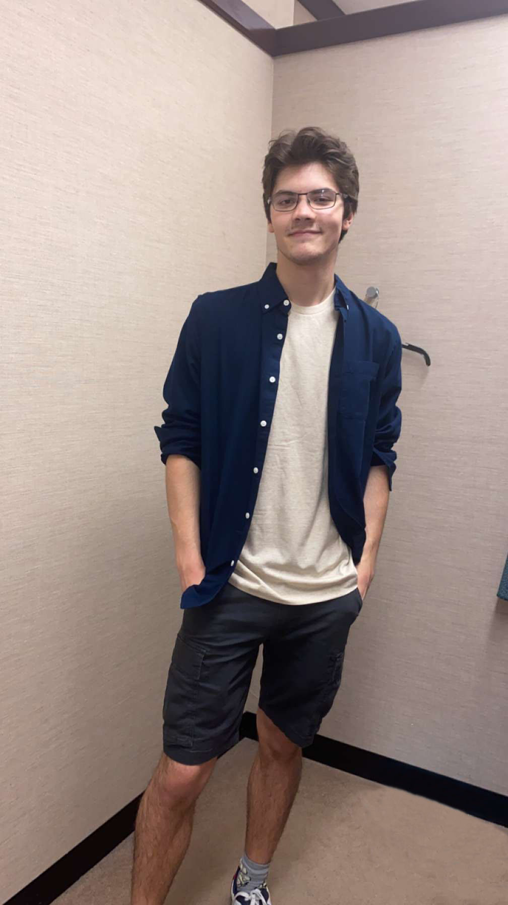
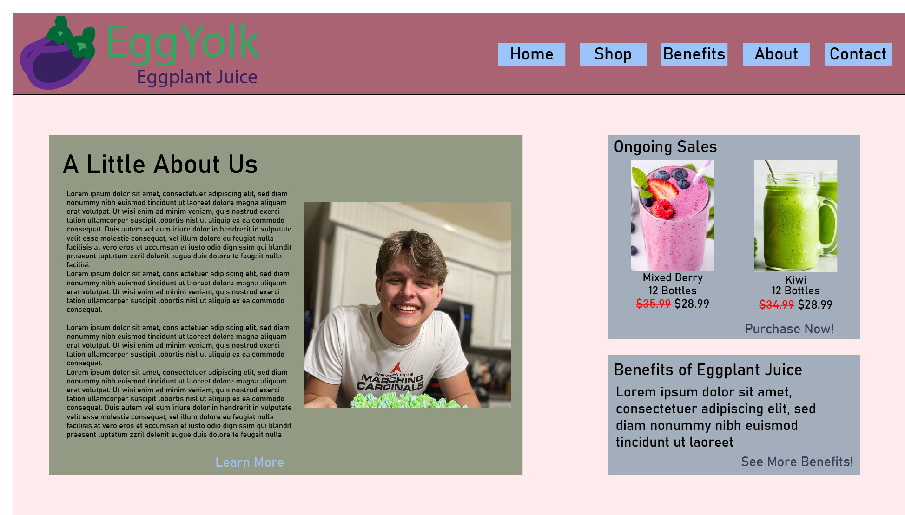
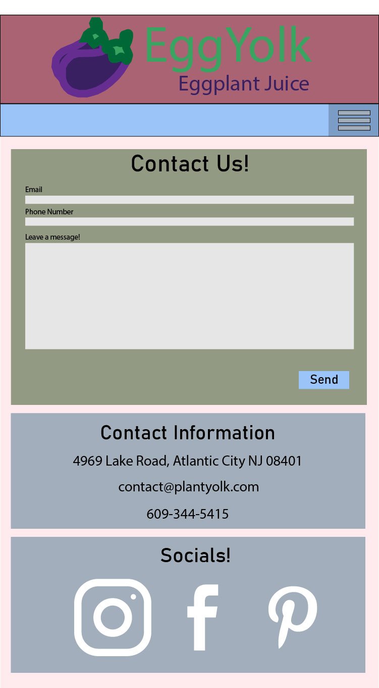

About

Hi! My name is Adam and I am currently a student at the University of Wisconsin-Eau Claire. I am majoring in communication studies with a minor in multimedia, and I hope to learn about design and building things with my knowledge, such as websites like these. My knowledge includes website design, social media work, and copyediting.
I am passionate about esports, volleyball, and social media work, so being able to combine my knowledge of design with my passions would be a dream.
My only work experience so far is as a shelf-stocker at Walmart, where I worked for a little over three years. I do some work with AI training currently but for only a couple hours a week.
My achievements include being on the Dean's list multiple semesters, graduating in the tenth percentile of my high school, and receiving the President's Education Award.
Collection
Below is a collection of some work I have done. It currently does not contain much, but it is ever expanding as I grow my skills!


Contact
The best way to get ahold of me is through email, though shooting a text is also acceptable!
Email: adamnardin2003@gmail.com
Phone: 715-563-8226